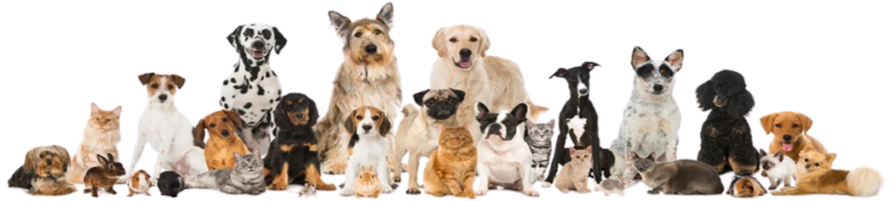

¡Hola, bienvenidos a Furry Friends! Decidir ampliar la familia con un amigo peludito, siempre nos cambiará la vida, por eso puede no ser tan fácil decidir; pero no dejes que te ganen las dudas, permítenos ofrecerte guía e información experta para que elijas la mascota que mejor se adapte a tus condiciones o, si ya tienes una, podemos ofrecerte los mejores productos y consejos para el bienestar de tu mascota y de tu familia, por supuesto.
Bienvenido a Furry Friends

Nuestra Misión
Aportar decididamente a la felicidad de su familia, ofreciéndole los mejores productos y servicios de atención de la mejor calidad para sus mascotas. Una de nuestras mayores fortalezas es contar con un equipo humano solidario, enfocado en brindarles a todos el mejor servicio con calidad y calidez.
Nuestra Visión
Sobre la base del servicio cálido y eficiente, convertirnos en una empresa reconocida a escala nacional y ser un referente en lo relacionado con la salud y el bienestar de las mascotas y, por ende, de nuestros clientes y de sus familias.
Quienes Somos

Somos un grupo de voluntarios amantes de las mascotas y conocedores de las redes sociales, grupos y profesionales que tenemos en común un sólo sentimiento el cariño por nuestros desconocido peludo, del cual, nadie sabe de donde llegó y hasta cuando estarán con nosotros. Cabe señalar que todo ser vivo de este planeta, son parte del equilibrio de la vida y de la existencia directa del ser humano, tambien nos importa toda vida silvestre, del medio ambiente y de su amor y respecto. las mascotas y seres vivos del planeta con un sólo objetivo el respecto a la vida.
Nuestros Valores
• Amor hacia los animales
• Honestidad
• Vocación de servicio
• Constante preparación
• Trabajo en equipo
Si deseas puedes ir a nuestra así como tambien, a la consultar por alguna raza que no has encontrado, o hacernos algun comentario, puedes hacerlo desde nuestro formulario de contacto haciendo click
